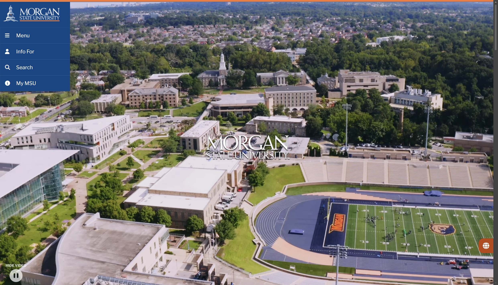

1. Website URL
2. Website Name
Morgan State University (MSU)
3. Target Audience
The site mainly targets prospective students researching Morgan State and current students looking for campus resources. It also serves parents, faculty, staff, alumni, and community members. Since Morgan is Maryland's largest HBCU and a public research university, the site also reaches people interested in its research programs, community initiatives, and legacy as a historically Black institution.
4. Site Organization
Morgan.edu uses a hierarchical structure. The homepage sits at the top and leads into broad sections like "Admissions & Aid," "Academics," "Research," and "Campus Life." Each section then breaks down into more specific sub-pages — for example, Admissions leads to pages for undergrad, graduate, transfer, and international students. There's also a search bar and a top-level navigation menu that lets users jump around, adding a slight webbed/matrix element for users who already know what they're looking for.
5. CRAP Design Principles
Morgan.edu applies all four CRAP principles well:
- Contrast: Morgan's blue and white color scheme creates strong contrast, making headings, buttons, and call-to-action links easy to spot against the white background.
- Repetition: The same header, navigation bar, footer, and brand colors appear consistently across every page, which keeps the experience cohesive.
- Alignment: Content blocks, images, and text are aligned in a clean grid layout throughout the site, making it easy to scan and read.
- Proximity: Related links are grouped together in the navigation — for example, all student resources are grouped under one menu, so users know they belong together.
6. Accessibility Checker Score
Audit score from the Accessibility Checker:
89%
According to the Accessibility Checker, morgan.edu scored 89 out of 100 and is currently marked as not compliant under United States law. The audit found 7 critical issues, 35 passed audits, and 22 items requiring manual review. One notable issue is that heading elements are not in the correct semantic order on several pages, which can cause problems for screen reader users. Sites scoring below 90 are considered at risk of accessibility lawsuits.
7. Effectiveness
The site is mostly effective. A prospective student can find admissions requirements, application deadlines, and program info without too much trouble. Current students can access their portal and find campus resources through the "Current Students" hub. That said, some important pages — like financial aid details or specific department contacts — take more clicks than they should to reach, which can slow users down.
8. Efficiency
Efficiency is decent but inconsistent. The top navigation and search bar help users get to major sections quickly. However, the site has a lot of pages and sub-pages, and some content feels buried. For example, finding a specific academic department or a niche student service can take several clicks and some guesswork. A more streamlined menu or a stronger search feature would improve this.
9. Engagement
The site is professionally designed and reflects the university's brand well. The blue and white color scheme feels appropriate for a university, and the homepage features strong imagery of students and campus life that creates a welcoming feel. That said, some interior pages are text-heavy and feel a bit flat — more visual variety and student-centered content further into the site would keep users engaged longer.
10. Recommendation
My biggest recommendation is to simplify the navigation menu. Right now there are a lot of top-level options, and hovering over them reveals large dropdowns with many more links. For a first-time visitor, this can be overwhelming and make it hard to figure out where to start. Consolidating the menu into fewer, clearer categories — and adding a "Quick Links" section on the homepage for the most common tasks like Apply, Financial Aid, and Campus Map — would make the site much easier to use for everyone.